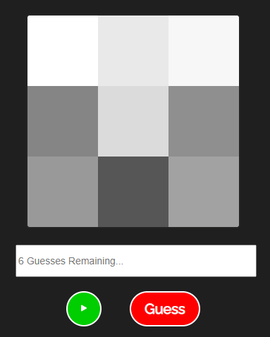
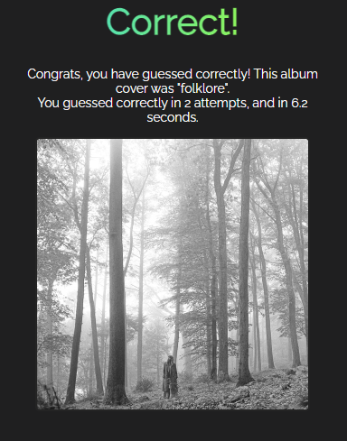
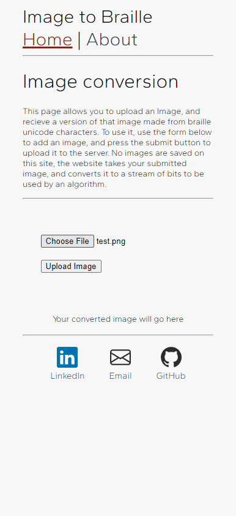
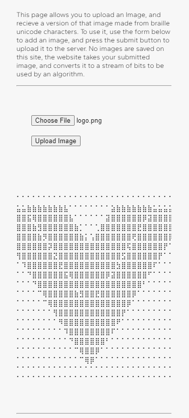

<div class="projects-page">
  <div class="projects-content">
    <h1>Projects</h1>
    <p>
      Welcome to the projects page!<br />
      Here you will find my latest and most interesting projects!
    </p>
    <hr />
    <div class="project">
      <h2>Vinyle</h2>
      <p>
        Vinyle is my attempt at a "Wordle"-like game. In Vinyle, you need to
        guess the album cover. When the game first begins, the album cover is
        pixelated, and gradually becomes less pixelated as the timer winds
        down.The game ends when certain conditions are met. If you guess
        correctly in the alloted time, or within the limited number of guesses
        you are given, then you have won. If the timer runs out, or you run out
        of guesses, then you have lost. When today's game has been completed,
        you are given a results screen. On this screen you are able to share
        your results on social media, see how many attempts were made, and how
        long was taken to guess correctly. You are also able to play previous
        games using the calendar selction at the top of the page.
        <br />
        I created this project while learning Vue.js. I wanted to utilise some
        features that are available in Vue.js. Overrall I achieved my initial
        vision for this app when I first started planning.
      </p>
      <div class="images">
        <figure>
          
          <figcaption>Vinyle - Game Screen</figcaption>
        </figure>
        <figure>
          
          <figcaption>Vinyle - Game Completed</figcaption>
        </figure>
      </div>
      <ul>
        <li><a href="https://vinyle-game.herokuapp.com/#/">Live Demo</a></li>
        <li><a href="https://github.com/Ciaran98/Vinyle">GitHub</a></li>
      </ul>
    </div>
    <div class="project">
      <h2>Image to Braille</h2>
      <p>
        Image to Braille is a site that converts an image into a braille version
        of the image. When first developing this project, I started off with a
        basic Node.js app that converted an image stored in a folder into ASCII
        text. I was satisfied with how the app worked, but decided to change the
        ASCII text to braille unicode characters. This required me to slightly
        change how the app functioned. Initially, the app iterated through each
        pixel, calculated the brightness value, and assigned it a symbol, giving
        each pixel 1 sepearate character each. However, braille unicode
        characters are made up of 8 dots, 2 dots wide, and 4 dots tall. The app
        now had to iterate through the image in 2x4 chunks, calculate each pixel
        brightness value individually, and added the values together to
        determine which braille unicode character should be used. Once these
        calculations are made, the converted image is sent as a response back to
        the page, and displayed for the user to copy and use wherever they want.
      </p>
      <div class="images">
        <figure>
          
          <figcaption>Image to Braille - Homescreen</figcaption>
        </figure>
        <figure>
          
          <figcaption>Vue.js Logo converted to braille</figcaption>
        </figure>
      </div>
      <ul>
        <li><a href="https://braille-image.herokuapp.com/#/">Live Demo</a></li>
        <li>
          <a href="https://github.com/Ciaran98/Braille-Image-Web">GitHub</a>
        </li>
      </ul>
    </div>
    <div class="project">
      <h2>Apex Randomiser</h2>
      <p>
        The Apex Randomiser is a randomiser app for the popular video game "Apex
        Legends". The site allows users to randomise a full loadout, character
        selection, and map drop location. The design of the site was inspired by
        the ui design of the game. Some custom assets were also created for the
        site.
      </p>
      <ul>
        <li><a href="https://apexrandom.web.app/">Live Demo</a></li>
        <li>
          <a href="https://github.com/Ciaran98/apexrandom">GitHub</a>
        </li>
      </ul>
    </div>
  </div>
</div>
